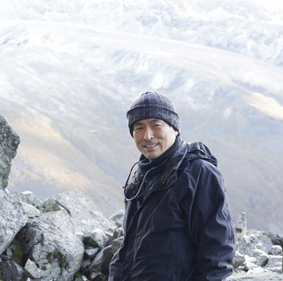
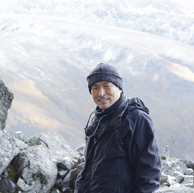

仕事の内容は、まるで映画？
資源探査・開発という仕事について、皆さんあまりイメージが浮かばないかもしれませんが、映画の『インディ・ジョーンズ』から戦闘とロマンスを除いたら、おおよそ私達の仕事の様子が想像できると思います。
働くフィールドは、高山、ジャングル、砂漠、海・・・国内外問わず、あらゆる地域に広がっています。
私自身、北は北極圏やアラスカの山奥から、南はオーストラリアの砂漠や南米のアンデス山脈、南太平洋の島々のジャングルまで、暑い所、寒い所、低い所、高い所、乾いた所、湿った所と様々な場所で探鉱に従事しました。
また、国内においては、産出する金鉱石の品質が世界一といわれる菱刈鉱山のオペレーションも当社の重要な事業です。
 
